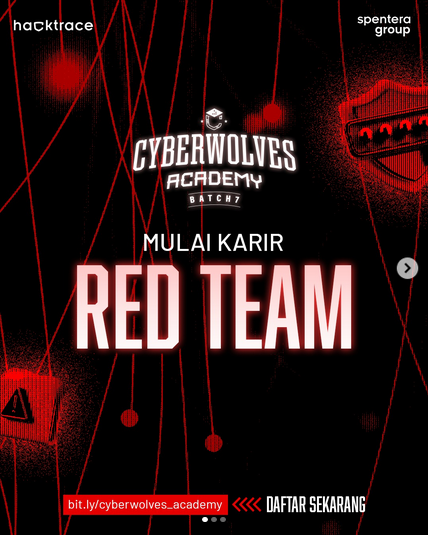
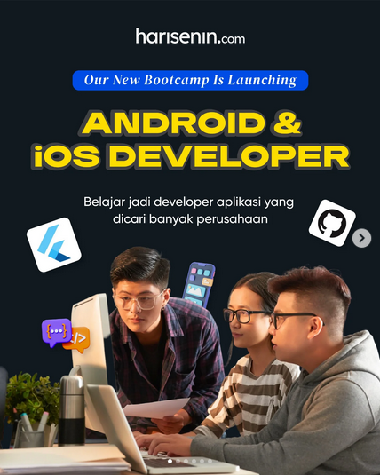
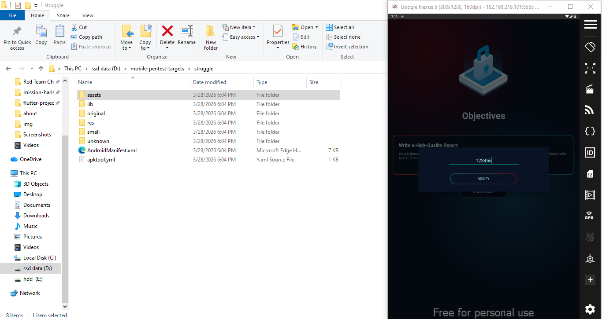
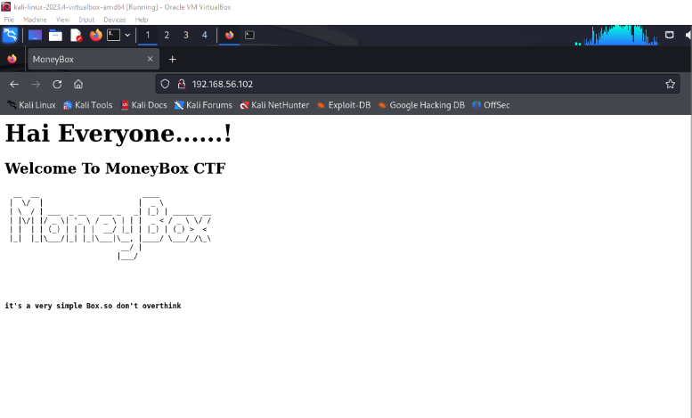
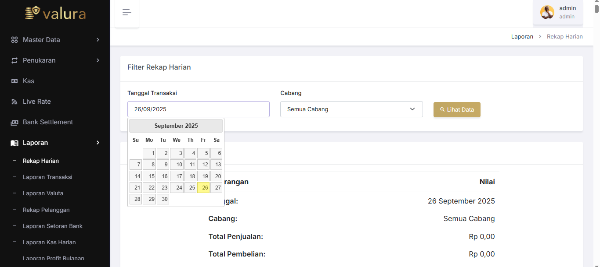
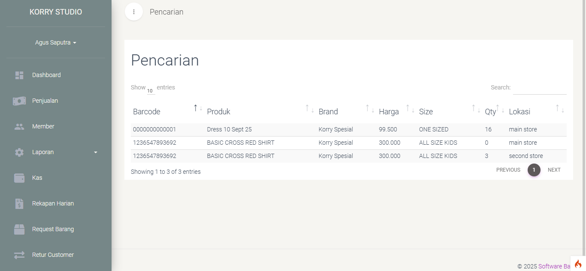
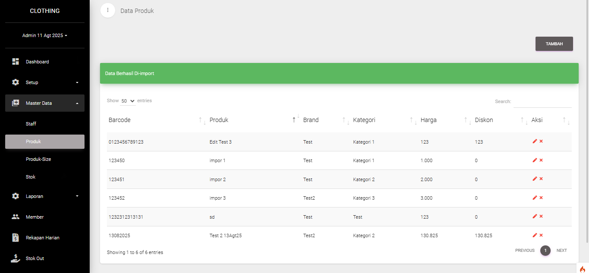
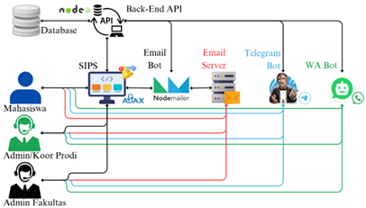

Tentang Saya
Halo! Perkenalkan, nama Saya I Nyoman Natha Pratama. Saya merupakan lulusan Teknik Elektro dengan konsentrasi Teknik Komputer yang berasal dari Denpasar. Saat ini, Saya sedang fokus mengembangkan diri melalui berbagai pelatihan di bidang cybersecurity dan mobile development sebagai bekal untuk memasuki dunia kerja. Saya memegang prinsip hidup yang terinspirasi dari Jinpachi Ego dalam seri Blue Lock, bahwa seorang striker harus mampu memikul beban berat dan berjuang hingga detik terakhir untuk menjadi yang terbaik. Bagi Saya, hal ini mencerminkan komitmen untuk mengambil tanggung jawab penuh atas tugas dan pantang menyerah sebelum mencapai hasil yang maksimal.
Saya memiliki ketertarikan utama di bidang cybersecurity, namun tetap adaptif dalam mempelajari bidang development dan engineering lainnya. Kelebihan Saya terletak pada resiliensi terhadap hal-hal yang menjadi passion Saya. Saya mampu bertahan selama berjam-jam saat menyelesaikan tantangan teknis hingga tuntas, yang menunjukkan komitmen serta fokus Saya dalam mencapai tujuan.
Salah satu pengalaman paling berkesan terkait hal tersebut adalah ketika Saya mengikuti Bootcamp Red Team dari Cyberwolves Academy Batch 7 secara bersamaan dengan Bootcamp Android & iOS Developer Batch 1 dari Harisenin. Dalam proses tersebut, Saya menyelesaikan tantangan pentesting hingga mendapatkan akses penuh, yang melatih Saya untuk berpikir secara sistematis, tidak mudah menyerah, dan tetap konsisten di bawah tekanan. Setelah itu, Saya juga bertanggung jawab untuk mengejar dan menuntaskan beberapa mission (tugas) yang sempat tertunda di bootcamp Harisenin sebagai bentuk komitmen terhadap apa yang telah Saya mulai.


Dari pengalaman tersebut, Saya menyadari bahwa kekuatan utama Saya terletak pada ketekunan dan fokus dalam menyelesaikan masalah yang kompleks. Hal ini semakin memperkuat keyakinan Saya bahwa bidang cybersecurity, khususnya pentesting, lebih sesuai dengan karakter dan cara kerja Saya dibandingkan dengan programming atau development secara umum.
Apa saja target yang pernah Saya pentest?
Website Penetration Testing
Vulnerable CMS Website - Hacktrace CRASH Program Batch 7 Red Team Challenge Phase 1
Pada ujian fase 1 di Bootcamp Red Team Cyberwolves Academy Batch 7, Saya diberikan tantangan black-box penetration testing terhadap sebuah website CMS dalam waktu 24 jam (pengerjaan & pelaporan). Pendekatan yang digunakan adalah full attack chain mulai dari reconnaissance, port & service enumeration menggunakan Nmap, eksploitasi web application hingga memperoleh remote shell, serta privilege escalation pada sistem Linux melalui proses enumerasi berbagai kemungkinan misconfiguration dan attack vector untuk mendapatkan akses user maupun root.
*Laporan lengkap dan detail teknis tidak dapat dipublikasikan karena bersifat confidential sesuai ketentuan program. Dokumentasi write-up, metodologi, serta proses eksploitasi dapat dijelaskan lebih lanjut secara langsung pada sesi interview apabila diperlukan.
Vulnerability Management System (VMS) Website - Hacktrace CRASH Program Batch 7 Red Team Challenge Phase 2
Pada ujian fase 2 Bootcamp Red Team Cyberwolves Academy Batch 7, Saya diberikan tantangan black-box Vulnerability Assessment & Penetration Testing (VAPT) terhadap sebuah Vulnerability Management System (VMS) berbasis website dalam batas waktu 48 jam pengerjaan lab dan 24 jam untuk pelaporan. Assessment dilakukan menggunakan metodologi OWASP Web Security Testing Guide (WSTG) yang mencakup proses reconnaissance, enumeration, vulnerability assessment, eksploitasi, hingga post-exploitation dan machine compromise untuk memperoleh akses user maupun root pada target Linux server.
*Laporan lengkap dan detail teknis tidak dapat dipublikasikan karena bersifat confidential sesuai ketentuan program. Dokumentasi VAPT, attack flow, proof of concept, serta proses eksploitasi dapat dijelaskan lebih lanjut secara langsung pada sesi interview apabila diperlukan.
Mobile Penetration Testing
struggle.apk - Hacktrace CRASH Program Batch 7 Red Team Challenge Phase 2

Selain website VMS, pada ujian fase 2 Bootcamp Red Team Cyberwolves Academy Batch 7 Saya juga diberikan tantangan black-box mobile application penetration testing terhadap aplikasi Android struggle.apk dalam batas waktu 48 jam pengerjaan lab dan 24 jam untuk pelaporan. Assessment dilakukan dengan pendekatan OWASP Mobile Application Security Verification Standard (MASVS) yang mencakup static analysis, dynamic analysis, reverse engineering, traffic interception, serta eksploitasi berbagai kerentanan aplikasi untuk memperoleh dan menyusun keseluruhan flag challenge yang tersebar pada setiap skenario pengujian.
*Laporan lengkap dan detail teknis tidak dapat dipublikasikan karena bersifat confidential sesuai ketentuan program. Dokumentasi VAPT, hasil analisis keamanan aplikasi, proof of concept, serta proses eksploitasi dapat dijelaskan lebih lanjut secara langsung pada sesi interview apabila diperlukan.
Vulnerable Machine Penetration Testing
MoneyBox VM

MoneyBox VM adalah target penetration testing berbasis Linux yang digunakan dalam ujian akhir bootcamp cybersecurity pertama Saya, yaitu Coding Studio Cyber Security Academy Batch 1, untuk mensimulasikan proses eksploitasi sistem secara end-to-end menggunakan metode black-box testing. Pada proses pengujian, dilakukan tahapan reconnaissance dan enumeration menggunakan Nmap untuk mengidentifikasi host aktif serta layanan yang berjalan pada port FTP, SSH, dan HTTP. Dari hasil enumerasi ditemukan beberapa kelemahan keamanan seperti anonymous FTP login, hidden directory pada web server, serta informasi sensitif yang tersembunyi melalui steganography pada file gambar.
Eksploitasi dilanjutkan dengan directory brute force menggunakan Gobuster, ekstraksi data tersembunyi menggunakan Steghide, hingga brute force password SSH menggunakan Hydra. Setelah memperoleh akses sebagai user biasa, dilakukan privilege escalation melalui konfigurasi sudo yang tidak aman pada user lain sehingga berhasil mendapatkan akses root ke sistem. Pengujian ini mendokumentasikan tahapan lengkap mulai dari host discovery, vulnerability identification, exploitation, privilege escalation, hingga pemberian rekomendasi mitigasi keamanan berdasarkan temuan yang berhasil dieksploitasi.
Lihat Detailed Walkthrough & Final Report →
Apa saja projek yang pernah Saya kerjakan?
Website Development
Valura - Money Changer POS • Korry - Clothing Store POS • Clothing Store POS Template



Selama menjalani program magang 3 bulan sebagai Full Stack Developer Intern di PT Software Bali Creative selama periode Juli hingga September 2025, Saya terlibat dalam pengembangan 3 sistem Point of Sale (POS) berbasis CodeIgniter 4 untuk mendukung kebutuhan operasional bisnis perusahaan. Project yang dikerjakan meliputi POS Money Changer, POS Toko Baju Korry, serta pengembangan sistem POS lainnya dengan fokus pada pengelolaan transaksi, autentikasi pengguna, dan integrasi REST API.
Pada proses pengembangan, Saya mengimplementasikan JWT Authentication untuk mengamankan akses API, melakukan pengujian endpoint menggunakan Postman, serta membantu migrasi project POS Toko Baju Korry dari CodeIgniter 3 ke CodeIgniter 4 guna meningkatkan performa dan kompatibilitas framework. Selain pengembangan sistem, Saya juga menyusun User Acceptance Test (UAT) dan manual book untuk mendukung proses operasional dan onboarding pengguna pada sistem POS yang dikembangkan.
*Source code, dokumentasi internal, dan detail teknis project tidak dapat dipublikasikan karena bersifat confidential sesuai ketentuan perusahaan. Penjelasan terkait arsitektur sistem, proses development, implementasi REST API, serta kontribusi selama program magang dapat dijelaskan lebih lanjut pada sesi interview apabila diperlukan.
SIPS Notification System REST API via Email, Telegram, & WhatsApp Bot

Ini merupakan Capstone Project yang Saya kerjakan selama 2 semester sebagai syarat kelulusan S1 Teknik Elektro Universitas Udayana. Project ini berfokus pada pengembangan REST API berbasis Node.js yang terintegrasi dengan Sistem Informasi Pengajuan Surat (SIPS) Fakultas Teknik Universitas Udayana untuk membantu proses administrasi surat mahasiswa secara digital dan real-time.
REST API ini berfungsi sebagai penghubung antara website pengajuan surat dengan sistem notifikasi multi-channel yang mengirimkan informasi pengajuan, validasi, hingga penyelesaian surat melalui Email, Telegram, dan WhatsApp Bot. Sistem dirancang menggunakan arsitektur endpoint terpisah untuk setiap proses validasi Prodi dan Fakultas, serta mendukung pengiriman notifikasi otomatis berdasarkan status pengajuan dan preferensi pengguna sehingga mahasiswa dapat memantau perkembangan surat tanpa harus datang langsung ke fakultas.
Lihat Live Demo SIPS Notification System REST API →
Mobile Development
WanderLy - Travel Planner App
Ini merupakan project akhir yang Saya kerjakan sebagai syarat kelulusan peserta program Bootcamp Android & iOS Developer Batch 1 oleh Harisenin. WanderLy adalah aplikasi mobile berbasis Flutter yang dibuat untuk membantu pengguna mengelola rencana perjalanan secara lebih praktis dan terorganisir. Aplikasi ini menyediakan fitur utama seperti Login dan Register pengguna, pengelolaan data perjalanan (Create, Read, Update, Delete), filter dan sorting perjalanan berdasarkan status maupun tanggal, hingga integrasi Google Maps untuk menampilkan lokasi perjalanan dalam bentuk marker. Selain itu, aplikasi juga mendukung Dark Mode untuk meningkatkan kenyamanan pengguna saat menggunakan aplikasi.
Pengembangan aplikasi menggunakan Flutter dengan bahasa pemrograman Dart. State management dikelola menggunakan Riverpod agar logika aplikasi lebih terstruktur dan mudah dikembangkan. Sistem autentikasi dan database cloud menggunakan Firebase Authentication dan Cloud Firestore sehingga data perjalanan dapat tersimpan secara real-time dan terikat pada masing-masing akun pengguna. Struktur project juga telah menerapkan Clean Architecture untuk memisahkan Presentation Layer, Domain Layer, dan Data Layer agar kode lebih rapi, scalable, dan mudah diuji melalui Unit Testing.
Lihat Source Code WanderLy →
Mobile E-Marketplace
Ini merupakan project akhir yang Saya kerjakan sebagai syarat kelulusan peserta program Bootcamp "Flutter: Bangun Mobile Apps untuk iOS & Android!" Batch 72 oleh Sanbercode. Mobile E-Marketplace adalah aplikasi mobile berbasis Flutter yang dibuat sebagai simulasi aplikasi belanja online. Aplikasi ini bertujuan untuk menampilkan alur dasar e-commerce, mulai dari halaman awal (Get Started), halaman Home, daftar produk, detail produk, keranjang belanja, hingga halaman pengaturan. Aplikasi ini tidak menggunakan autentikasi Firebase, sehingga disediakan tombol Preview agar pengguna dapat langsung masuk dan mencoba fitur utama tanpa login.
Pengelolaan state menggunakan BLoC (Cubit) dengan struktur Model-View-ViewModel (MVVM). Data produk dan keranjang diambil dari REST API publik DummyJSON, yaitu https://dummyjson.com/products untuk data produk dan https://dummyjson.com/carts untuk data keranjang.
Lihat Live Demo Mobile E-Marketplace →